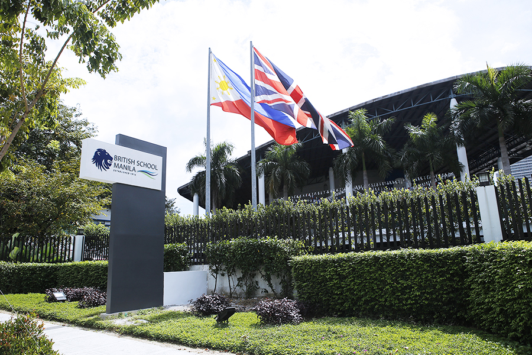

브리티시 스쿨 마닐라(보니파시오 글로벌 시티) · 사진: DTinayBSM / Wikimedia Commons, CC BY-SA 4.0
브리티시 스쿨 마닐라(British School Manila) — 같은 동네에 계열이 다른 두 학교가 있습니다
1. 어떤 학교인가
· 설립 — 1976년에 세워진 것으로 알려져 있습니다. 마닐라에서 꽤 오래된 국제학교에 속합니다.
· 캠퍼스 — 2001년 9월 지금의 보니파시오 글로벌 시티(BGC, 타기그) 유니버시티 파크 자리로 옮긴 것으로 안내됩니다. 초등 과정과 중·고등 과정이 한 캠퍼스 안에 있습니다.
· 학년 — 만 3세부터 18세까지로 안내됩니다.
· 교육과정 — 영국 국가교육과정을 바탕으로 Key Stage 단위로 운영됩니다. Key Stage 4에서 IGCSE를 치르고, 마지막 2년인 Key Stage 5에서 IB 디플로마 프로그램으로 이어지는 것으로 안내됩니다.
· 인증 — CIS(Council of International Schools), WASC, IB 기구의 인증을 받은 것으로 소개됩니다.
※ 학비·정원·재학생 수·합격률처럼 해마다 바뀌는 수치는 이 글에서 다루지 않습니다. 개설 과정과 학년 구성도 연도에 따라 안내가 달라질 수 있으니 올해 요강을 학교에 직접 확인하세요.
2. 핵심 ① — 영국식으로 시작해서 IB로 끝납니다
"브리티시 스쿨"이라는 이름을 보시면 대부분 A-Level을 떠올리십니다. 영국식 학교의 마지막 2년은 보통 A-Level이기 때문입니다. 그런데 이 학교는 Key Stage 5(마지막 2년)를 IB 디플로마로 운영하는 것으로 안내됩니다.
이게 왜 중요하냐면, 두 구간에서 점수를 가르는 것이 서로 다르기 때문입니다.
· 중등 구간(IGCSE) — 과목을 고르고 줄이는 선택이 한국보다 이르게 옵니다. 시험이 외부 시험으로 나가므로 답안의 형식을 익혀야 합니다. → IGCSE 과목 선택 가이드
· 고등 구간(IB 디플로마) — 여섯 영역을 폭넓게 가져가고, 소논문·내부 평가처럼 기한이 있는 긴 과제가 성적의 큰 몫을 차지합니다. → IB DP 점수 구조
즉 아이가 중등에서 "과목을 줄이는 훈련"을 하다가, 고등에서 갑자기 "여섯 영역을 동시에 관리하는 훈련"으로 넘어갑니다. 이 전환 지점을 모르고 계시면 Year 12 첫 학기에 성적이 한 번 흔들립니다. 영국식으로 시작해 IB로 마무리하는 구조는 이 학교만의 일이 아니어서, 상하이의 NAIS 푸동·BISS 푸시, 두바이의 GEMS 웰링턴, 요코하마의 세인트모어에서도 같은 구조를 보실 수 있습니다.
3. 핵심 ② — 같은 동네 두 학교, 무엇으로 고르나
마닐라에서 한국 가정이 실제로 놓이는 상황은 이렇습니다. 두 학교가 모두 BGC 안에 있어 통학 시간 차이가 크지 않습니다. 그래서 다른 도시에서 통하던 기준(집에서 가까운 쪽)이 여기서는 잘 작동하지 않습니다.
대신 남는 기준은 둘입니다. 학년 체계와 아이가 들어가는 시점입니다.
| 확인할 것 | 브리티시 스쿨 마닐라 (이 글) | 인터내셔널 스쿨 마닐라(ISM) |
|---|---|---|
| 계열 | 영국 국가교육과정 | 미국식 |
| 학년 부르는 법 | Year + Key Stage | Grade |
| 중등 구간 | IGCSE(외부 시험, 과목을 고른다) | 학교 교과 + 내신 누적 |
| 마지막 2년 | IB 디플로마 | 미국식 졸업장 + IB 디플로마 |
| 설립·캠퍼스 | 1976년 · 2001년 BGC로 이전 | 1920년 · 2002년 BGC로 이전 |
| 위치 | 둘 다 보니파시오 글로벌 시티(타기그) 안 — 통학 거리로는 갈리지 않는 경우가 많습니다 | |
※ 위 표는 각 학교가 공개한 안내를 바탕으로 구조만 비교한 것입니다. 개설 과정은 연도에 따라 바뀔 수 있으니 반드시 그해 요강을 확인하세요.
4. 핵심 ③ — 편입 학년이 선택을 정합니다
두 학교 중 하나를 고르실 때 가장 실질적인 기준은 "우리 아이가 몇 학년에 들어가는가"입니다. 영국식은 외부 시험이 2년짜리 코스로 묶여 있어서, 들어가는 시점에 따라 열리는 문이 다릅니다.
· 초등~한국 중학교 1학년 무렵 — 양쪽 다 열려 있습니다. 이 시기에는 계열보다 영어와 수학 용어를 먼저 잡는 편이 훨씬 남습니다.
· 한국 중학교 2~3학년 무렵(영국식 Year 10 전후) — 가장 조심해야 하는 구간입니다. IGCSE는 보통 2년에 걸쳐 진행되므로, 그 중간에 합류하면 이미 정해진 과목과 이미 지나간 단원을 따라잡아야 합니다. 합류가 가능한지, 어떤 과목으로 합류하는지를 학교에 먼저 물으셔야 합니다.
· 고등 진입 직전 — 마지막 2년이 양쪽 다 IB 디플로마로 안내되므로, 이 시점에서는 계열보다 어떤 과목을 HL로 가져갈 수 있는지가 더 중요한 질문이 됩니다.
영국식 Year와 미국식 Grade, 한국 학년이 서로 어떻게 대응하는지는 학년 체계 총정리에, 편입 절차와 서류는 편입·전학 총정리에 정리해 두었습니다.
5. 한국(주재원) 학생·학부모가 겪는 어려움
· 영어 쓰는 나라라 안심하다가 늦게 발견합니다. 필리핀은 영어를 널리 쓰기 때문에 아이의 생활 영어가 빨리 늡니다. 그런데 성적은 교과를 읽고 설명하는 영어에서 갈려서, 회화가 되는데 점수가 안 나오는 상태가 한참 이어집니다. 이 이야기는 ISM 글에서 더 자세히 다뤘습니다. → EAL · 리딩 레벨 읽는 법
· Key Stage라는 말이 낯섭니다. 학년 이름이 Year로 바뀌고 그 위에 Key Stage라는 묶음이 또 있어서, 아이를 몇 학년에 넣는지부터 헷갈립니다. → 학년 체계 총정리
· 과목 선택이 한국보다 이릅니다. 정보가 없으면 "일단 다 하는" 쪽으로 밀리는데, 그러면 고등에서 시간이 모자랍니다. → IGCSE 과목 선택
· 수학은 용어와 서술에서 막힙니다. 한국에서 이미 배운 단원인데 알지브라·지오메트리 용어가 영어라 손을 못 댑니다. 답만 적으면 과정 점수를 받지 못합니다. → 알지브라 공부법
· 모의고사를 그냥 학교 시험으로 넘깁니다. IGCSE·IB 학교의 모의고사는 대학 지원에 쓰이는 예측 성적의 근거가 되는 경우가 있습니다. → 모의고사·예측 성적
· 플랫폼만 보면 원인이 안 보입니다. 무엇을 냈는지는 보이는데 왜 그 점수인지는 안 적혀 있습니다. → 학습 플랫폼·시간표 읽는 법 · 성적표 읽는 법
6. 그래서 이렇게 준비합니다
🧭 먼저 — 들어가는 학년과 그때의 구간을 적는다
종이에 두 줄만 적어 보세요. "우리 아이는 몇 월에, 어느 학년으로 들어가는가." 그리고 "그때 이 학교에서 그 학년은 어느 구간(초등 / IGCSE / IB 디플로마)인가." 이 두 줄이 정해지면 준비할 것이 저절로 좁아집니다.
📖 영어과외 — 회화 말고 교과 영어부터
영어를 널리 쓰는 나라일수록 이 순서를 지키셔야 합니다. 논픽션 지문을 읽는 속도, analyze·evaluate·justify 같은 지시어의 뜻, 문단의 구조 — 이 세 가지가 점수를 정합니다. IGCSE 구간에서는 여기에 답안의 형식이 하나 더 붙습니다. (영어 공부법 참고)
📐 수학과외 — 용어를 붙이고, 과정을 문장으로
아이가 이미 아는 개념에 영어 용어를 다시 붙이는 작업부터 합니다. 그다음 풀이 과정을 영어 문장으로 적는 습관을 들입니다. IGCSE와 IB 모두 과정을 보여 주지 않으면 점수를 다 받지 못합니다.
📅 학교를 방문하신다면
BGC의 두 학교를 같은 주에 함께 보시는 것을 권합니다. 물을 것은 셋입니다. "우리 아이 학년에 자리가 있는가", "IGCSE 중간에 합류할 수 있는가, 과목은 어떻게 되는가", "영어 지원이 몇 학년까지 제공되는가". 무엇을 묻고 무엇을 볼지는 오픈데이·학교 방문 준비법에 정리해 두었습니다.
7. 마닐라의 강점 — 시차 한 시간의 화상과외
필리핀은 한국보다 한 시간 느립니다. 마닐라 오후 4시가 한국 오후 5시라, 아이가 학교에서 돌아온 직후 시간이 한국 강사진의 수업 시간과 그대로 맞습니다. 주재원 가정이 많은 도시 중에서도 시간표를 맞추기 가장 편한 축에 듭니다. 수업은 아이의 실제 과제와 학교가 준 채점 기준을 화면에 놓고 "어느 항목에서 깎였는지"부터 보는 방식이 가장 빠릅니다.
정리
브리티시 스쿨 마닐라는 1976년 설립으로 알려졌고 2001년 보니파시오 글로벌 시티로 옮긴 것으로 안내되는 영국식 학교입니다. IGCSE를 거쳐 마지막 2년은 IB 디플로마로 이어집니다. 마닐라에서 이 학교와 ISM을 놓고 고민하실 때, 통학 거리는 답을 주지 않습니다. 답은 "우리 아이가 몇 학년에 들어가는가"에서 나옵니다. 30분 무료 상담으로 들어갈 학년과 구간부터 함께 짚어 보세요.